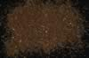

|
DOCUMENTATION_FORMAT: MINERAL
SAMPLE_ID: HS271.1B, HS271.2B, HS271.3B, HS271.4B
MINERAL_TYPE: Carbonate
MINERAL: Siderite (Calcite group)
FORMULA: FeCO3
FORMULA_HTML: FeCO3
COLLECTION_LOCALITY: Roxbury, Connecticut
ORIGINAL_DONOR: Hunt and Salisbury Collection
CURRENT_SAMPLE_LOCATION: USGS Denver Spectroscopy Laboratory
ULTIMATE_SAMPLE_LOCATION: USGS Denver Spectroscopy Laboratory
SAMPLE_DESCRIPTION:
Forms series with Magnesite and with Rhodochrosite.
"C-7. Siderite. Roxbury, Conn. (68, hand-ground). Siderite, FeCO3, is found in extensive sedimentary beds, frequently contaminated with clay or organic matter. It is also commonly deposited in veins by hydrothermal solutions. Both magnesium and manganese commonly substitute for the iron. This particular sample is coarsely crystalline and medium brown in color. It is high in iron, as indicated by the strong ferrous ion band near 1.1µ. It is also slightly contaminated with magnetite. Being an opaque material, the magnetite lowers the overall reflectivity of the sample, makes the carbonate bands less prominent, and causes the crossover of the spectral curves in the visible. Analysis shows that this sample contains 0.98% Mg2+ and 7.03% Mn+2. However, the electronic transitions of iron dominate the spectrum to such an extent that none of the sharp features due to Mn++ are apparent in the visible spectrum." NOTE: This a different sample number than this sample (271) but the collection locality is the same. Possibly a mislabeled sample.
Hunt, G.R., J.W. Salisbury, 1971, Visible and near-infrared spectra of minerals and rocks: II. Carbonates. Modern Geology, v. 2, p. 23-30.
Grain size fractions are indicated by the extension after the sample number:
.1B = <5 µm
.2B = <74 µm
.3B = 74-250 µm
.4B = 250-1200 µm
IMAGE_OF_SAMPLE:

END_SAMPLE_DESCRIPTION.
XRD_ANALYSIS:
Pure siderite
Possibly some manganoan siderite also - patterns too similar to
differentiate.
Konnert, Judith and Marta Flohr, 1992, unpublished data, USGS Reston, VA.
END_XRD_ANALYSIS.
COMPOSITIONAL_ANALYSIS_TYPE: None # XRF, EPMA, ICP(Trace), WChem
COMPOSITION_TRACE:
COMPOSITION_DISCUSSION:
END_COMPOSITION_DISCUSSION.
MICROSCOPIC_EXAMINATION:
END_MICROSCOPIC_EXAMINATION.
SPECTROSCOPIC_DISCUSSION:
END_SPECTROSCOPIC_DISCUSSION.
SPECTRAL_PURITY: 1a2_3_4_ # HS271.1B # 1= 0.2-3, 2= 1.5-6, 3= 6-25, 4= 20-150 microns
SPECTRAL_PURITY: 1a2_3_4_ # HS271.2B # 1= 0.2-3, 2= 1.5-6, 3= 6-25, 4= 20-150 microns
SPECTRAL_PURITY: 1a2a3a4_ # HS271.3B # 1= 0.2-3, 2= 1.5-6, 3= 6-25, 4= 20-150 microns
SPECTRAL_PURITY: 1a2_3_4_ # HS271.4B # 1= 0.2-3, 2= 1.5-6, 3= 6-25, 4= 20-150 microns
{kind=link}